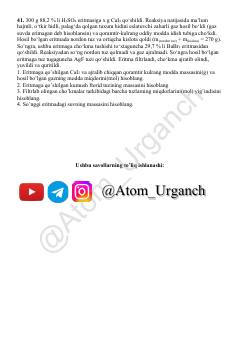

KFKimyo fanidan olimpiada darajasidagi murakkab masalalar va laboratoriya topshiriqlari to'plami.
Ushbu to'plam kimyo fanidan olimpiada ishtirokchilari uchun mo'ljallangan murakkab nazariy va amaliy masalalarni o'z ichiga oladi. Unda noorganik kimyo reaksiyalari, elektroliz jarayonlari va moddalarni aniqlashga oid laboratoriya topshiriqlari batafsil keltirilgan.